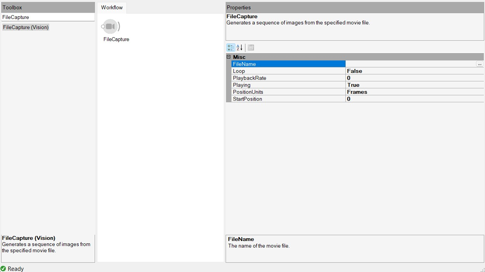
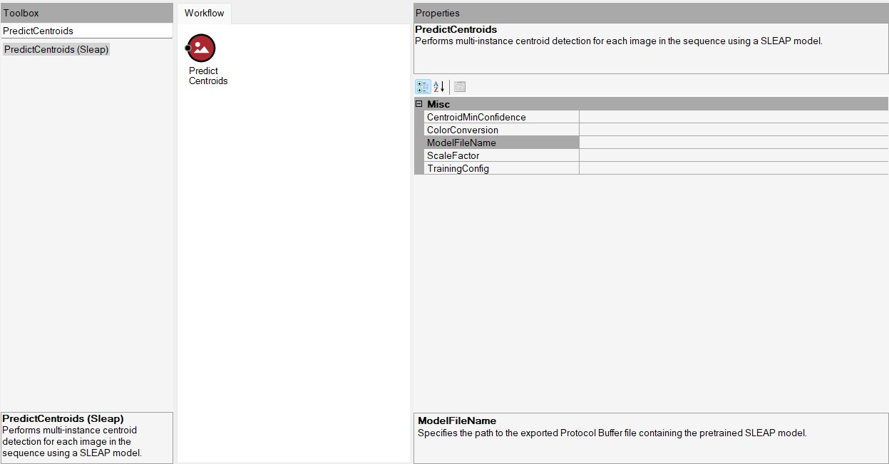
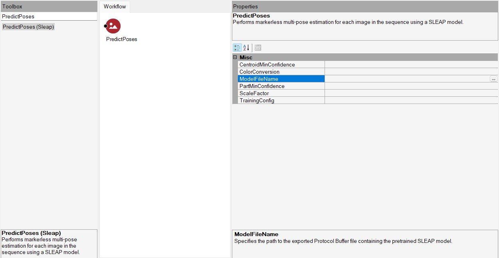
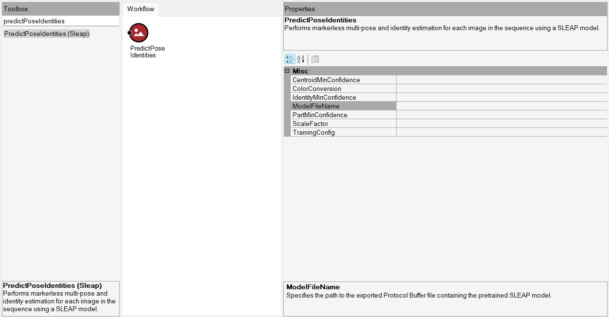
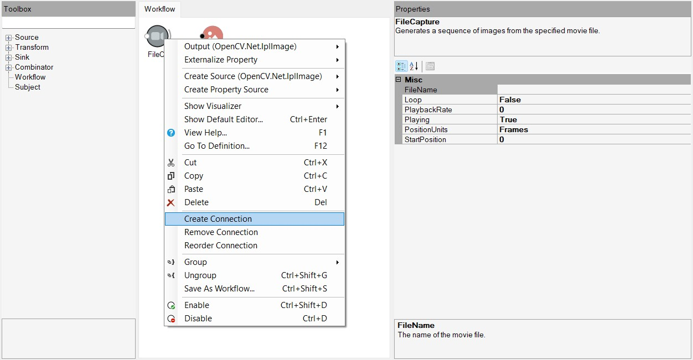
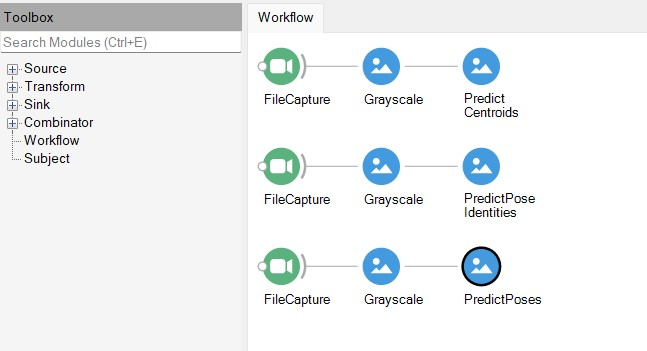

Using Bonsai with SLEAP#
Bonsai is a visual language for reactive programming and currently supports SLEAP models.
Note
Currently Bonsai supports only single instance, top-down and top-down-id SLEAP models.
Exporting a SLEAP trained model#
Before we can import a trained model into Bonsai, we need to use the sleap-export command to convert the model to a format supported by Bonsai. For example, to export a top-down-id model, the command is as follows:
sleap-export -m centroid/model/folder/path -m top_down_id/model/folder/path -e exported/model/path
Please refer to the sleap-export docs for more details on using the command.
This will generate the necessary .pb file and other information files required by Bonsai. In this example, these files were saved to the specified exported/model/path folder.
The exported/model/path folder will have a structure like the following:
exported/model/path
├── centroid_config.json
├── confmap_config.json
├── frozen_graph.pb
└── info.json
Installing Bonsai and necessary packages#
Install Bonsai. See the Bonsai installation instructions.
Download and add the necessary packages for Bonsai to run with SLEAP. See the official Bonsai SLEAP documentation for more information.
Using Bonsai SLEAP modules#
Once you have Bonsai installed with the required packages, you should be able to open the Bonsai application.
The workflow must have a source module FileCapture which can be found in the toolbox search in the workflow editor. Provide the path to the video that was used to train the SLEAP model in the FileName field of the module.

Top-down model#
The top-down model requires both the PredictCentroids and the PredictPoses modules.
The PredictCentroids module will predict the centroids of detections. There are two fields inside the PredictCentroids module: the ModelFileName field and the TrainingConfig field. The TrainingConfig field expects the path to the training config JSON file for the centroid model. The ModelFileName field expects the path to the frozen_graph.pb file in the exported/model/path folder.

The PredictPoses module will predict the instances of detections. Similar to the PredictCentroid module, there are two fields inside the PredictPoses module: the ModelFileName field and the TrainingConfig field. The TrainingConfig field expects the path to the training config JSON file for the centered instance model. The ModelFileName field expects the path to the frozen_graph.pb file in the exported/model/path folder.

Top-Down-ID model#
The PredictPoseIdentities module will predict the instances with identities. This module has two fields: the ModelFileName field and the TrainingConfig field. The TrainingConfig field expects the path to the training config JSON file for the top-down-id model. The ModelFileName field expects the path to the frozen_graph.pb file in the exported/model/path folder.

Single instance model#
The PredictSinglePose module will predict the poses for single instance models. This module also has two fields: the ModelFileName field and the TrainingConfig field. The TrainingConfig field expects the path to the training config JSON file for the single instance model. The ModelFileName field expects the path to the frozen_graph.pb file in the exported/model/path folder.
Connecting the modules#
Right click on the FileCapture module and select Create Connection. Now click on the required SLEAP module to complete the connection.

Once it is done, the workflow in Bonsai will look something like the following:

Now you can click the green start button to run the workflow and you can add more modules to analyze and visualize the results in Bonsai.
For more documentation on various modules and workflows, please refer to the official Bonsai docs.